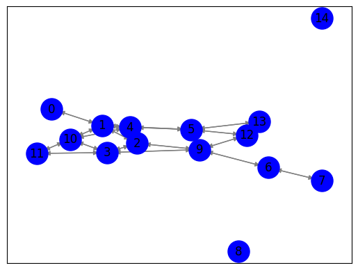

Closeness centrality#
Langkah 1: Crawl data judul berita dan isi berita dari Kompas.com#
import requests
from bs4 import BeautifulSoup
import csv
url = "https://www.jawapos.com/indeks-berita?daterange=10%20October,%202023%20-%208%20November,%202023"
response = requests.get(url)
soup = BeautifulSoup(response.content, "html.parser")
# Find all the news articles
articles = soup.find_all("h2", class_="latest__title")
# Fungsi untuk mendapatkan konten berita dari URL
def get_article_content(url):
response = requests.get(url)
if response.status_code == 200:
soup = BeautifulSoup(response.content, "html.parser")
content = soup.find("article", class_="read__content").text.strip()
return content
return None
# Membuka file CSV untuk menulis
with open('hasil_crawling.csv', mode='w', newline='', encoding='utf-8') as file:
writer = csv.writer(file)
writer.writerow(['Title', 'Link', 'Content']) # Menulis header
for article in articles:
title = article.text.strip()
link = article.a["href"]
content = get_article_content(link)
# Print the title and content
print("Title:", title)
print("Link:", link)
print("Content:", content)
print("=" * 50)
# Menulis baris data ke dalam file CSV
writer.writerow([title, link, content])
print("Data berhasil disimpan dalam file hasil_crawling.csv")
Data berhasil disimpan dalam file hasil_crawling.csv
df = pd.DataFrame(news_data)
---------------------------------------------------------------------------
NameError Traceback (most recent call last)
<ipython-input-2-a2b38f53c8ba> in <cell line: 1>()
----> 1 df = pd.DataFrame(news_data)
NameError: name 'pd' is not defined
# Create a pandas DataFrame from the scraped data
df = pd.DataFrame(news_data)
# Save the DataFrame to a CSV file
df.to_csv('jawapos_sports_news.csv', index=False)
---------------------------------------------------------------------------
NameError Traceback (most recent call last)
<ipython-input-5-8852515ccdca> in <cell line: 2>()
1 # Create a pandas DataFrame from the scraped data
----> 2 df = pd.DataFrame(news_data)
3
4 # Save the DataFrame to a CSV file
5 df.to_csv('jawapos_sports_news.csv', index=False)
NameError: name 'pd' is not defined
import requests
from bs4 import BeautifulSoup
import pandas as pd
def get_article_content(article_url):
response = requests.get(article_url)
if response.status_code == 200:
soup = BeautifulSoup(response.text, 'html.parser')
article_content = soup.find('div', class_='read__content clearfix').find_all('p')
content = '\n'.join([p.get_text() for p in article_content])
return content
return ""
def scrape_news_data(start_date, end_date):
base_url = "https://www.jawapos.com/indeks-berita?daterange=10%20October,%202023%20-%208%20November,%202023"
data = []
current_date = start_date
while current_date <= end_date:
url = base_url.format(
current_date.strftime('%d'),
current_date.strftime('%B'),
current_date.strftime('%Y'),
current_date.strftime('%d'),
current_date.strftime('%B'),
current_date.strftime('%Y')
)
response = requests.get(url)
if response.status_code == 200:
soup = BeautifulSoup(response.text, 'html.parser')
news_elements = soup.find_all('h2', class_='latest__title')
for element in news_elements:
title = element.a.text
article_url = element.a['href']
content = get_article_content(article_url)
data.append({'Date': current_date.strftime('%d-%m-%Y'), 'Title': title, 'Content': content})
current_date += timedelta(days=1)
else:
print(f"Failed to fetch data for {current_date.strftime('%d-%m-%Y')}")
return data
from datetime import date, timedelta
start_date = date(2023, 10, 1)
end_date = date(2023, 11, 1)
news_data = scrape_news_data(start_date, end_date)
Failed to fetch data for 01-10-2023
Failed to fetch data for 01-10-2023
Failed to fetch data for 01-10-2023
Failed to fetch data for 01-10-2023
Failed to fetch data for 01-10-2023
Failed to fetch data for 01-10-2023
Failed to fetch data for 01-10-2023
Failed to fetch data for 01-10-2023
Failed to fetch data for 01-10-2023
Failed to fetch data for 01-10-2023
Failed to fetch data for 01-10-2023
Failed to fetch data for 01-10-2023
Failed to fetch data for 01-10-2023
Failed to fetch data for 01-10-2023
Failed to fetch data for 01-10-2023
Failed to fetch data for 01-10-2023
Failed to fetch data for 01-10-2023
Failed to fetch data for 01-10-2023
Failed to fetch data for 01-10-2023
Failed to fetch data for 01-10-2023
Failed to fetch data for 01-10-2023
Failed to fetch data for 01-10-2023
Failed to fetch data for 01-10-2023
Failed to fetch data for 01-10-2023
Failed to fetch data for 01-10-2023
Failed to fetch data for 01-10-2023
Failed to fetch data for 01-10-2023
Failed to fetch data for 01-10-2023
---------------------------------------------------------------------------
KeyboardInterrupt Traceback (most recent call last)
<ipython-input-1-e7acbcda8666> in <cell line: 51>()
49 end_date = date(2023, 11, 1)
50
---> 51 news_data = scrape_news_data(start_date, end_date)
<ipython-input-1-e7acbcda8666> in scrape_news_data(start_date, end_date)
26 current_date.strftime('%Y')
27 )
---> 28 response = requests.get(url)
29
30 if response.status_code == 200:
/usr/local/lib/python3.10/dist-packages/requests/api.py in get(url, params, **kwargs)
71 """
72
---> 73 return request("get", url, params=params, **kwargs)
74
75
/usr/local/lib/python3.10/dist-packages/requests/api.py in request(method, url, **kwargs)
57 # cases, and look like a memory leak in others.
58 with sessions.Session() as session:
---> 59 return session.request(method=method, url=url, **kwargs)
60
61
/usr/local/lib/python3.10/dist-packages/requests/sessions.py in request(self, method, url, params, data, headers, cookies, files, auth, timeout, allow_redirects, proxies, hooks, stream, verify, cert, json)
587 }
588 send_kwargs.update(settings)
--> 589 resp = self.send(prep, **send_kwargs)
590
591 return resp
/usr/local/lib/python3.10/dist-packages/requests/sessions.py in send(self, request, **kwargs)
701
702 # Send the request
--> 703 r = adapter.send(request, **kwargs)
704
705 # Total elapsed time of the request (approximately)
/usr/local/lib/python3.10/dist-packages/requests/adapters.py in send(self, request, stream, timeout, verify, cert, proxies)
484
485 try:
--> 486 resp = conn.urlopen(
487 method=request.method,
488 url=url,
/usr/local/lib/python3.10/dist-packages/urllib3/connectionpool.py in urlopen(self, method, url, body, headers, retries, redirect, assert_same_host, timeout, pool_timeout, release_conn, chunked, body_pos, preload_content, decode_content, **response_kw)
789
790 # Make the request on the HTTPConnection object
--> 791 response = self._make_request(
792 conn,
793 method,
/usr/local/lib/python3.10/dist-packages/urllib3/connectionpool.py in _make_request(self, conn, method, url, body, headers, retries, timeout, chunked, response_conn, preload_content, decode_content, enforce_content_length)
466 # Trigger any extra validation we need to do.
467 try:
--> 468 self._validate_conn(conn)
469 except (SocketTimeout, BaseSSLError) as e:
470 self._raise_timeout(err=e, url=url, timeout_value=conn.timeout)
/usr/local/lib/python3.10/dist-packages/urllib3/connectionpool.py in _validate_conn(self, conn)
1095 # Force connect early to allow us to validate the connection.
1096 if conn.is_closed:
-> 1097 conn.connect()
1098
1099 if not conn.is_verified:
/usr/local/lib/python3.10/dist-packages/urllib3/connection.py in connect(self)
640 )
641
--> 642 sock_and_verified = _ssl_wrap_socket_and_match_hostname(
643 sock=sock,
644 cert_reqs=self.cert_reqs,
/usr/local/lib/python3.10/dist-packages/urllib3/connection.py in _ssl_wrap_socket_and_match_hostname(sock, cert_reqs, ssl_version, ssl_minimum_version, ssl_maximum_version, cert_file, key_file, key_password, ca_certs, ca_cert_dir, ca_cert_data, assert_hostname, assert_fingerprint, server_hostname, ssl_context, tls_in_tls)
781 server_hostname = normalized
782
--> 783 ssl_sock = ssl_wrap_socket(
784 sock=sock,
785 keyfile=key_file,
/usr/local/lib/python3.10/dist-packages/urllib3/util/ssl_.py in ssl_wrap_socket(sock, keyfile, certfile, cert_reqs, ca_certs, server_hostname, ssl_version, ciphers, ssl_context, ca_cert_dir, key_password, ca_cert_data, tls_in_tls)
469 pass
470
--> 471 ssl_sock = _ssl_wrap_socket_impl(sock, context, tls_in_tls, server_hostname)
472 return ssl_sock
473
/usr/local/lib/python3.10/dist-packages/urllib3/util/ssl_.py in _ssl_wrap_socket_impl(sock, ssl_context, tls_in_tls, server_hostname)
513 return SSLTransport(sock, ssl_context, server_hostname)
514
--> 515 return ssl_context.wrap_socket(sock, server_hostname=server_hostname)
/usr/lib/python3.10/ssl.py in wrap_socket(self, sock, server_side, do_handshake_on_connect, suppress_ragged_eofs, server_hostname, session)
511 # SSLSocket class handles server_hostname encoding before it calls
512 # ctx._wrap_socket()
--> 513 return self.sslsocket_class._create(
514 sock=sock,
515 server_side=server_side,
/usr/lib/python3.10/ssl.py in _create(cls, sock, server_side, do_handshake_on_connect, suppress_ragged_eofs, server_hostname, context, session)
1069 # non-blocking
1070 raise ValueError("do_handshake_on_connect should not be specified for non-blocking sockets")
-> 1071 self.do_handshake()
1072 except (OSError, ValueError):
1073 self.close()
/usr/lib/python3.10/ssl.py in do_handshake(self, block)
1340 if timeout == 0.0 and block:
1341 self.settimeout(None)
-> 1342 self._sslobj.do_handshake()
1343 finally:
1344 self.settimeout(timeout)
KeyboardInterrupt:
# Create a pandas DataFrame from the scraped data
df = pd.DataFrame(news_data)
# Save the DataFrame to a CSV file
df.to_csv('jawapos_sports_news.csv', index=False)
---------------------------------------------------------------------------
NameError Traceback (most recent call last)
<ipython-input-3-8852515ccdca> in <cell line: 2>()
1 # Create a pandas DataFrame from the scraped data
----> 2 df = pd.DataFrame(news_data)
3
4 # Save the DataFrame to a CSV file
5 df.to_csv('jawapos_sports_news.csv', index=False)
NameError: name 'pd' is not defined
df
| Judul | Isi Berita | |
|---|---|---|
| 0 | Hari Ini dalam Sejarah, Raja Faisal dari Arab ... | KOMPAS.com — Faisal bin Abdulaziz al-Saud dike... |
| 1 | Tarif MRT Bundaran HI-Lebak Bulus Rp 8.500, LR... | JAKARTA, KOMPAS.com - Dalam rapat pimpinan gab... |
| 2 | MUI Minta Masyarakat Stop Pakai Istilah "Cebon... | Jakarta, KOMPAS.com — Majelis Ulama Indonesia ... |
| 3 | Pemantau Asing dari 33 Negara Akan Ikut Memoni... | JAKARTA, KOMPAS.com — Komisioner Komisi Pemili... |
| 4 | Ridwan Kamil Optimistis Tol Cisumdawu Bawa Per... | BANDUNG, KOMPAS.com - Perkembangan pengerjaan ... |
| ... | ... | ... |
| 295 | 5 Fakta Turis Asing Ingin Dekati Kawah hingga ... | KOMPAS.com - Seorang wisatawan asing di kawasa... |
| 296 | TKN Jokowi-Ma'ruf Sebut Ada Bendera HTI di Kam... | JAKARTA, KOMPAS.com - Anggota Dewan Pengarah B... |
| 297 | Cemburu Jadi Motif Pelaku Bunuh Pria yang Jena... | BATAM, KOMPAS.com - Kasus pembunuhan pria yang... |
| 298 | Video: Detik-detik Jatuhnya Meteor 10 Kali Bom... | KOMPAS.com - 18 Desember tahun lalu, sebuah me... |
| 299 | Survei Charta Politika: Elektabilitas PSI Tert... | JAKARTA KOMPAS.com - Survei terbaru Charta Pol... |
300 rows × 2 columns
df.to_csv("Data_berita.csv", index=False)
Langkah 2: Ekstraksi Kalimat (NLTK)#
import pandas as pd
df = pd.read_csv("/content/drive/MyDrive/ppw/tugas/Data/Data_berita.csv")
df
| Judul | Isi Berita | |
|---|---|---|
| 0 | Hari Ini dalam Sejarah, Raja Faisal dari Arab ... | KOMPAS.com — Faisal bin Abdulaziz al-Saud dike... |
| 1 | Tarif MRT Bundaran HI-Lebak Bulus Rp 8.500, LR... | JAKARTA, KOMPAS.com - Dalam rapat pimpinan gab... |
| 2 | MUI Minta Masyarakat Stop Pakai Istilah "Cebon... | Jakarta, KOMPAS.com — Majelis Ulama Indonesia ... |
| 3 | Pemantau Asing dari 33 Negara Akan Ikut Memoni... | JAKARTA, KOMPAS.com — Komisioner Komisi Pemili... |
| 4 | Ridwan Kamil Optimistis Tol Cisumdawu Bawa Per... | BANDUNG, KOMPAS.com - Perkembangan pengerjaan ... |
| ... | ... | ... |
| 295 | 5 Fakta Turis Asing Ingin Dekati Kawah hingga ... | KOMPAS.com - Seorang wisatawan asing di kawasa... |
| 296 | TKN Jokowi-Ma'ruf Sebut Ada Bendera HTI di Kam... | JAKARTA, KOMPAS.com - Anggota Dewan Pengarah B... |
| 297 | Cemburu Jadi Motif Pelaku Bunuh Pria yang Jena... | BATAM, KOMPAS.com - Kasus pembunuhan pria yang... |
| 298 | Video: Detik-detik Jatuhnya Meteor 10 Kali Bom... | KOMPAS.com - 18 Desember tahun lalu, sebuah me... |
| 299 | Survei Charta Politika: Elektabilitas PSI Tert... | JAKARTA KOMPAS.com - Survei terbaru Charta Pol... |
300 rows × 2 columns
berita = df['Isi Berita'].iloc[0]
print(berita)
KOMPAS.com — Faisal bin Abdulaziz al-Saud dikenal sebagai salah satu raja yang memiliki pengaruh besar dalam Kerajaan Arab Saudi. Saat Raja Faisal memimpin (1964-1975), dia dianggap sebagai tokoh yang membawa pandangan modern.Raja Faisal juga tercatat sebagai orang yang menghapus perbudakan di Arab Saudi serta salah satu tokoh di Timur Tengah yang tegas dalam menolak dominasi Amerika Serikat atau Uni Soviet.Saat memimpin, Raja Faisal bahkan secara tegas mengkritik standar ganda negara Barat terkait kemerdekaan Palestina. Ini menyebabkan Raja Faisal melakukan boikot minyak ke negara Barat yang dianggap terlalu membela Israel. Aksi ini mengakibatkan krisis minyak pada 1973.Namun, hari ini 44 tahun yang lalu, tragedi melanda Arab Saudi. https://twitter.com/elisa_jkt/status/1109761623344844801Pada 25 Maret 1975, Raja Faisal dibunuh oleh keponakannya sendiri, Pangeran Faisal Ibu Musaed.Pangeran Faisal menembakkan tiga peluru ke tubuh Raja dari jarak dekat. Peristiwa itu terjadi saat berlangsung audiensi kerajaan.Baca juga: Hari Ini dalam Sejarah, Rolls-Royce Memulai DebutnyaKejadianDilansir dari BBC, sebelum penembakan terjadi Raja Faisal membungkukkan badan untuk mencium sang keponakan, Pangeran Faisal. Akan tetapi, ia justru mendapatkan tembakan langsung di dagu dan telinga.Penjaga raja yang mengetahui kejadian itu langsung mengarahkan pedang kepada Pangeran Faisal. Pedang pengawal masih dalam kondisi tertutup sehingga tidak melukainya sama sekali.Menteri Perminyakan Sheikh Yamani berteriak kepada sang penjaga untuk tidak membunuh Pangeran Fasial.Raja Faisal langsung dilarikan ke rumah sakit dalam keadaan masih hidup. Tim dokter telah mencoba menyelamatkan nyawa Raja, misalnya dengan melakukan transfusi darah dan memijat bagian hati. Namun, luka tembak yang diterimanya terlalu fatal untuk ditangani.Ia pun tutup usia pada hari itu juga, di usia ke-69.Baca juga: Hari Ini dalam Sejarah: Penemuan Struktur DNA ManusiaJadi tersangkaPangeran Faisal langsung ditangkap dan diamankan untuk dimintai keterangan. Hingga sekarang belum diketahui secara pasti apa alasan penembakan yang dilakukan oleh Pangeran Faisal di Riyadh, Arab Saudi, ini.Beredar dugaan mengenai alasan pembunuhan paman oleh keponakannya ini. Salah satunya karena kematian kakaknya, Khalid, pada bentrokan dengan pasukan keamanan pada 1966.Sempat pula beredar teori konspirasi yang diduga melatarbelakangi pembunuhan ini. Namun, hasil penyidikan menemukan Pangeran Faisal melakukan serangan ini seorang diri tanpa peran orang lain.Pangeran Faisal juga menjalani pemeriksaan secara mental untuk mengetahui kondisi kejiwaannya. Dari hasil pemeriksaan itu, dokter dan psikiater menyatakan sang pangeran mengalami gangguan keseimbangan mental.Pernyataan serupa pun dilontarkan pihak keluarga kerajaan setelah penembakan mengerikan ini. Mereka menyebut kejiwaan Pangeran Faisal terganggu.
#install library
!pip install sastrawi
!pip install swifter
!pip install gensim
Collecting sastrawi
Downloading Sastrawi-1.0.1-py2.py3-none-any.whl (209 kB)
?25l ━━━━━━━━━━━━━━━━━━━━━━━━━━━━━━━━━━━━━━━━ 0.0/209.7 kB ? eta -:--:--
━━━━━━━━━━━╸━━━━━━━━━━━━━━━━━━━━━━━━━━━━ 61.4/209.7 kB 1.6 MB/s eta 0:00:01
━━━━━━━━━━━━━━━━━━━━━━━━━━━━━━━━━━━━━━━━ 209.7/209.7 kB 3.2 MB/s eta 0:00:00
?25hInstalling collected packages: sastrawi
Successfully installed sastrawi-1.0.1
Collecting swifter
Downloading swifter-1.4.0.tar.gz (1.2 MB)
━━━━━━━━━━━━━━━━━━━━━━━━━━━━━━━━━━━━━━━━ 1.2/1.2 MB 13.5 MB/s eta 0:00:00
?25h Preparing metadata (setup.py) ... ?25l?25hdone
Requirement already satisfied: pandas>=1.0.0 in /usr/local/lib/python3.10/dist-packages (from swifter) (1.5.3)
Requirement already satisfied: psutil>=5.6.6 in /usr/local/lib/python3.10/dist-packages (from swifter) (5.9.5)
Requirement already satisfied: dask[dataframe]>=2.10.0 in /usr/local/lib/python3.10/dist-packages (from swifter) (2023.8.1)
Requirement already satisfied: tqdm>=4.33.0 in /usr/local/lib/python3.10/dist-packages (from swifter) (4.66.1)
Requirement already satisfied: click>=8.0 in /usr/local/lib/python3.10/dist-packages (from dask[dataframe]>=2.10.0->swifter) (8.1.7)
Requirement already satisfied: cloudpickle>=1.5.0 in /usr/local/lib/python3.10/dist-packages (from dask[dataframe]>=2.10.0->swifter) (2.2.1)
Requirement already satisfied: fsspec>=2021.09.0 in /usr/local/lib/python3.10/dist-packages (from dask[dataframe]>=2.10.0->swifter) (2023.6.0)
Requirement already satisfied: packaging>=20.0 in /usr/local/lib/python3.10/dist-packages (from dask[dataframe]>=2.10.0->swifter) (23.2)
Requirement already satisfied: partd>=1.2.0 in /usr/local/lib/python3.10/dist-packages (from dask[dataframe]>=2.10.0->swifter) (1.4.1)
Requirement already satisfied: pyyaml>=5.3.1 in /usr/local/lib/python3.10/dist-packages (from dask[dataframe]>=2.10.0->swifter) (6.0.1)
Requirement already satisfied: toolz>=0.10.0 in /usr/local/lib/python3.10/dist-packages (from dask[dataframe]>=2.10.0->swifter) (0.12.0)
Requirement already satisfied: importlib-metadata>=4.13.0 in /usr/local/lib/python3.10/dist-packages (from dask[dataframe]>=2.10.0->swifter) (6.8.0)
Requirement already satisfied: python-dateutil>=2.8.1 in /usr/local/lib/python3.10/dist-packages (from pandas>=1.0.0->swifter) (2.8.2)
Requirement already satisfied: pytz>=2020.1 in /usr/local/lib/python3.10/dist-packages (from pandas>=1.0.0->swifter) (2023.3.post1)
Requirement already satisfied: numpy>=1.21.0 in /usr/local/lib/python3.10/dist-packages (from pandas>=1.0.0->swifter) (1.23.5)
Requirement already satisfied: zipp>=0.5 in /usr/local/lib/python3.10/dist-packages (from importlib-metadata>=4.13.0->dask[dataframe]>=2.10.0->swifter) (3.17.0)
Requirement already satisfied: locket in /usr/local/lib/python3.10/dist-packages (from partd>=1.2.0->dask[dataframe]>=2.10.0->swifter) (1.0.0)
Requirement already satisfied: six>=1.5 in /usr/local/lib/python3.10/dist-packages (from python-dateutil>=2.8.1->pandas>=1.0.0->swifter) (1.16.0)
Building wheels for collected packages: swifter
Building wheel for swifter (setup.py) ... ?25l?25hdone
Created wheel for swifter: filename=swifter-1.4.0-py3-none-any.whl size=16507 sha256=19e38cd4270052d71c5b5ce4ece2fa3d383374bc79b355fbd30ac0c4423f66dd
Stored in directory: /root/.cache/pip/wheels/e4/cf/51/0904952972ee2c7aa3709437065278dc534ec1b8d2ad41b443
Successfully built swifter
Installing collected packages: swifter
Successfully installed swifter-1.4.0
Requirement already satisfied: gensim in /usr/local/lib/python3.10/dist-packages (4.3.2)
Requirement already satisfied: numpy>=1.18.5 in /usr/local/lib/python3.10/dist-packages (from gensim) (1.23.5)
Requirement already satisfied: scipy>=1.7.0 in /usr/local/lib/python3.10/dist-packages (from gensim) (1.11.3)
Requirement already satisfied: smart-open>=1.8.1 in /usr/local/lib/python3.10/dist-packages (from gensim) (6.4.0)
import numpy as np
from nltk.corpus import stopwords
import re
import nltk
nltk.download('stopwords')
nltk.download('wordnet')
nltk.download('punkt')
from Sastrawi.Stemmer.StemmerFactory import StemmerFactory
from nltk.tokenize import sent_tokenize, word_tokenize
from sklearn.feature_extraction.text import TfidfVectorizer
[nltk_data] Downloading package stopwords to /root/nltk_data...
[nltk_data] Unzipping corpora/stopwords.zip.
[nltk_data] Downloading package wordnet to /root/nltk_data...
[nltk_data] Downloading package punkt to /root/nltk_data...
[nltk_data] Unzipping tokenizers/punkt.zip.
Langkah 3: TF IDF#
kalimat = nltk.sent_tokenize(berita)
tfidf_vectorizer = TfidfVectorizer()
tfidf_matrix = tfidf_vectorizer.fit_transform(kalimat)
terms = tfidf_vectorizer.get_feature_names_out()
for i, sentence in enumerate(kalimat):
print(f"\nKalimat {i+1}: {sentence}")
for j, term in enumerate(terms):
tfidf_value = tfidf_matrix[i, j]
if tfidf_value > 0:
print(f"{term}: {tfidf_value:.4f}")
Kalimat 1: KOMPAS.com — Faisal bin Abdulaziz al-Saud dikenal sebagai salah satu raja yang memiliki pengaruh besar dalam Kerajaan Arab Saudi.
abdulaziz: 0.2621
al: 0.2621
arab: 0.1841
besar: 0.2621
bin: 0.2621
com: 0.2276
dalam: 0.1686
dikenal: 0.2621
faisal: 0.1096
kerajaan: 0.2031
kompas: 0.2621
memiliki: 0.2621
pengaruh: 0.2621
raja: 0.1341
salah: 0.2031
satu: 0.2276
saud: 0.2621
saudi: 0.1841
sebagai: 0.2276
yang: 0.1341
Kalimat 2: Saat Raja Faisal memimpin (1964-1975), dia dianggap sebagai tokoh yang membawa pandangan modern.Raja Faisal juga tercatat sebagai orang yang menghapus perbudakan di Arab Saudi serta salah satu tokoh di Timur Tengah yang tegas dalam menolak dominasi Amerika Serikat atau Uni Soviet.Saat memimpin, Raja Faisal bahkan secara tegas mengkritik standar ganda negara Barat terkait kemerdekaan Palestina.
1964: 0.1303
1975: 0.1131
amerika: 0.1303
arab: 0.0915
atau: 0.1303
bahkan: 0.1303
barat: 0.1131
dalam: 0.0838
di: 0.1830
dia: 0.1303
dianggap: 0.1131
dominasi: 0.1303
faisal: 0.1634
ganda: 0.1303
juga: 0.0915
kemerdekaan: 0.1303
membawa: 0.1303
memimpin: 0.2606
menghapus: 0.1303
mengkritik: 0.1303
menolak: 0.1303
modern: 0.1303
negara: 0.1131
orang: 0.1131
palestina: 0.1303
pandangan: 0.1303
perbudakan: 0.1303
raja: 0.2000
saat: 0.2263
salah: 0.1010
satu: 0.1131
saudi: 0.0915
sebagai: 0.2263
secara: 0.1010
serikat: 0.1303
serta: 0.1303
soviet: 0.1303
standar: 0.1303
tegas: 0.2606
tengah: 0.1303
tercatat: 0.1303
terkait: 0.1303
timur: 0.1303
tokoh: 0.2606
uni: 0.1303
yang: 0.2000
Kalimat 3: Ini menyebabkan Raja Faisal melakukan boikot minyak ke negara Barat yang dianggap terlalu membela Israel.
barat: 0.2770
boikot: 0.3190
dianggap: 0.2770
faisal: 0.1334
ini: 0.1632
israel: 0.3190
ke: 0.2241
melakukan: 0.2472
membela: 0.3190
menyebabkan: 0.3190
minyak: 0.2770
negara: 0.2770
raja: 0.1632
terlalu: 0.2770
yang: 0.1632
Kalimat 4: Aksi ini mengakibatkan krisis minyak pada 1973.Namun, hari ini 44 tahun yang lalu, tragedi melanda Arab Saudi.
1973: 0.2687
44: 0.2687
aksi: 0.2687
arab: 0.1887
hari: 0.2082
ini: 0.2749
krisis: 0.2687
lalu: 0.2687
melanda: 0.2687
mengakibatkan: 0.2687
minyak: 0.2333
namun: 0.2082
pada: 0.2082
saudi: 0.1887
tahun: 0.2687
tragedi: 0.2687
yang: 0.1375
Kalimat 5: https://twitter.com/elisa_jkt/status/1109761623344844801Pada 25 Maret 1975, Raja Faisal dibunuh oleh keponakannya sendiri, Pangeran Faisal Ibu Musaed.Pangeran Faisal menembakkan tiga peluru ke tubuh Raja dari jarak dekat.
1109761623344844801pada: 0.2009
1975: 0.1744
25: 0.2009
com: 0.1744
dari: 0.1557
dekat: 0.2009
dibunuh: 0.2009
elisa_jkt: 0.2009
faisal: 0.2520
https: 0.2009
ibu: 0.2009
jarak: 0.2009
ke: 0.1411
keponakannya: 0.1744
maret: 0.2009
menembakkan: 0.2009
musaed: 0.2009
oleh: 0.1744
pangeran: 0.2055
peluru: 0.2009
raja: 0.2055
sendiri: 0.2009
status: 0.2009
tiga: 0.2009
tubuh: 0.2009
twitter: 0.2009
Kalimat 6: Peristiwa itu terjadi saat berlangsung audiensi kerajaan.Baca juga: Hari Ini dalam Sejarah, Rolls-Royce Memulai DebutnyaKejadianDilansir dari BBC, sebelum penembakan terjadi Raja Faisal membungkukkan badan untuk mencium sang keponakan, Pangeran Faisal.
audiensi: 0.1975
baca: 0.1715
badan: 0.1975
bbc: 0.1975
berlangsung: 0.1975
dalam: 0.1270
dari: 0.1530
debutnyakejadiandilansir: 0.1975
faisal: 0.1652
hari: 0.1530
ini: 0.1010
itu: 0.1387
juga: 0.1387
keponakan: 0.1975
kerajaan: 0.1530
membungkukkan: 0.1975
memulai: 0.1975
mencium: 0.1975
pangeran: 0.1010
penembakan: 0.1530
peristiwa: 0.1975
raja: 0.1010
rolls: 0.1975
royce: 0.1975
saat: 0.1715
sang: 0.1530
sebelum: 0.1975
sejarah: 0.1715
terjadi: 0.3950
untuk: 0.1387
Kalimat 7: Akan tetapi, ia justru mendapatkan tembakan langsung di dagu dan telinga.Penjaga raja yang mengetahui kejadian itu langsung mengarahkan pedang kepada Pangeran Faisal.
akan: 0.2383
dagu: 0.2383
dan: 0.1674
di: 0.1674
faisal: 0.0996
ia: 0.2069
itu: 0.1674
justru: 0.2383
kejadian: 0.2383
kepada: 0.2069
langsung: 0.3693
mendapatkan: 0.2383
mengarahkan: 0.2383
mengetahui: 0.2069
pangeran: 0.1219
pedang: 0.2069
penjaga: 0.2069
raja: 0.1219
telinga: 0.2383
tembakan: 0.2383
tetapi: 0.2383
yang: 0.1219
Kalimat 8: Pedang pengawal masih dalam kondisi tertutup sehingga tidak melukainya sama sekali.Menteri Perminyakan Sheikh Yamani berteriak kepada sang penjaga untuk tidak membunuh Pangeran Fasial.Raja Faisal langsung dilarikan ke rumah sakit dalam keadaan masih hidup.
berteriak: 0.1726
dalam: 0.2221
dilarikan: 0.1726
faisal: 0.0722
fasial: 0.1726
hidup: 0.1726
ke: 0.1213
keadaan: 0.1726
kepada: 0.1499
kondisi: 0.1499
langsung: 0.1338
masih: 0.3453
melukainya: 0.1726
membunuh: 0.1726
menteri: 0.1726
pangeran: 0.0883
pedang: 0.1499
pengawal: 0.1726
penjaga: 0.1499
perminyakan: 0.1726
raja: 0.0883
rumah: 0.1726
sakit: 0.1726
sama: 0.1726
sang: 0.1338
sehingga: 0.1726
sekali: 0.1726
sheikh: 0.1726
tertutup: 0.1726
tidak: 0.3453
untuk: 0.1213
yamani: 0.1726
Kalimat 9: Tim dokter telah mencoba menyelamatkan nyawa Raja, misalnya dengan melakukan transfusi darah dan memijat bagian hati.
bagian: 0.2686
dan: 0.1887
darah: 0.2686
dengan: 0.2332
dokter: 0.2332
hati: 0.2686
melakukan: 0.2081
memijat: 0.2686
mencoba: 0.2686
menyelamatkan: 0.2686
misalnya: 0.2686
nyawa: 0.2686
raja: 0.1374
telah: 0.2686
tim: 0.2686
transfusi: 0.2686
Kalimat 10: Namun, luka tembak yang diterimanya terlalu fatal untuk ditangani.Ia pun tutup usia pada hari itu juga, di usia ke-69.Baca juga: Hari Ini dalam Sejarah: Penemuan Struktur DNA ManusiaJadi tersangkaPangeran Faisal langsung ditangkap dan diamankan untuk dimintai keterangan.
69: 0.1690
baca: 0.1468
dalam: 0.1087
dan: 0.1187
di: 0.1187
diamankan: 0.1690
dimintai: 0.1690
ditangani: 0.1690
ditangkap: 0.1690
diterimanya: 0.1690
dna: 0.1690
faisal: 0.0707
fatal: 0.1690
hari: 0.2619
ia: 0.1468
ini: 0.0865
itu: 0.1187
juga: 0.2374
ke: 0.1187
keterangan: 0.1690
langsung: 0.1310
luka: 0.1690
manusiajadi: 0.1690
namun: 0.1310
pada: 0.1310
penemuan: 0.1690
pun: 0.1468
sejarah: 0.1468
struktur: 0.1690
tembak: 0.1690
terlalu: 0.1468
tersangkapangeran: 0.1690
tutup: 0.1690
untuk: 0.2374
usia: 0.3380
yang: 0.0865
Kalimat 11: Hingga sekarang belum diketahui secara pasti apa alasan penembakan yang dilakukan oleh Pangeran Faisal di Riyadh, Arab Saudi, ini.Beredar dugaan mengenai alasan pembunuhan paman oleh keponakannya ini.
alasan: 0.4024
apa: 0.2012
arab: 0.1413
belum: 0.2012
beredar: 0.1747
di: 0.1413
diketahui: 0.2012
dilakukan: 0.2012
dugaan: 0.2012
faisal: 0.0841
hingga: 0.2012
ini: 0.2059
keponakannya: 0.1747
mengenai: 0.2012
oleh: 0.3494
paman: 0.2012
pangeran: 0.1029
pasti: 0.2012
pembunuhan: 0.1747
penembakan: 0.1559
riyadh: 0.2012
saudi: 0.1413
secara: 0.1559
sekarang: 0.2012
yang: 0.1029
Kalimat 12: Salah satunya karena kematian kakaknya, Khalid, pada bentrokan dengan pasukan keamanan pada 1966.Sempat pula beredar teori konspirasi yang diduga melatarbelakangi pembunuhan ini.
1966: 0.2193
bentrokan: 0.2193
beredar: 0.1904
dengan: 0.1904
diduga: 0.2193
ini: 0.1122
kakaknya: 0.2193
karena: 0.2193
keamanan: 0.2193
kematian: 0.2193
khalid: 0.2193
konspirasi: 0.2193
melatarbelakangi: 0.2193
pada: 0.3399
pasukan: 0.2193
pembunuhan: 0.1904
pula: 0.2193
salah: 0.1700
satunya: 0.2193
sempat: 0.2193
teori: 0.2193
yang: 0.1122
Kalimat 13: Namun, hasil penyidikan menemukan Pangeran Faisal melakukan serangan ini seorang diri tanpa peran orang lain.Pangeran Faisal juga menjalani pemeriksaan secara mental untuk mengetahui kondisi kejiwaannya.
diri: 0.2275
faisal: 0.1903
hasil: 0.1976
ini: 0.1164
juga: 0.1598
kejiwaannya: 0.2275
kondisi: 0.1976
lain: 0.2275
melakukan: 0.1763
menemukan: 0.2275
mengetahui: 0.1976
menjalani: 0.2275
mental: 0.1976
namun: 0.1763
orang: 0.1976
pangeran: 0.2328
pemeriksaan: 0.1976
penyidikan: 0.2275
peran: 0.2275
secara: 0.1763
seorang: 0.2275
serangan: 0.2275
tanpa: 0.2275
untuk: 0.1598
Kalimat 14: Dari hasil pemeriksaan itu, dokter dan psikiater menyatakan sang pangeran mengalami gangguan keseimbangan mental.Pernyataan serupa pun dilontarkan pihak keluarga kerajaan setelah penembakan mengerikan ini.
dan: 0.1583
dari: 0.1747
dilontarkan: 0.2254
dokter: 0.1957
gangguan: 0.2254
hasil: 0.1957
ini: 0.1153
itu: 0.1583
keluarga: 0.2254
kerajaan: 0.1747
keseimbangan: 0.2254
mengalami: 0.2254
mengerikan: 0.2254
mental: 0.1957
menyatakan: 0.2254
pangeran: 0.1153
pemeriksaan: 0.1957
penembakan: 0.1747
pernyataan: 0.2254
pihak: 0.2254
psikiater: 0.2254
pun: 0.1957
sang: 0.1747
serupa: 0.2254
setelah: 0.2254
Kalimat 15: Mereka menyebut kejiwaan Pangeran Faisal terganggu.
faisal: 0.1985
kejiwaan: 0.4748
menyebut: 0.4748
mereka: 0.4748
pangeran: 0.2429
terganggu: 0.4748
Langkah 4: Cosine Similarity#
from sklearn.metrics.pairwise import cosine_similarity
import networkx as nx
import matplotlib.pyplot as plt
cosine_similarities = cosine_similarity(tfidf_matrix, tfidf_matrix)
for i in range(len(kalimat)):
for j in range(i+1, len(kalimat)):
similarity = cosine_similarities[i][j]
print(f"Similarity Kalimat {i+1} dan Kalimat {j+1}: {similarity:.4f}")
Similarity Kalimat 1 dan Kalimat 2: 0.2171
Similarity Kalimat 1 dan Kalimat 3: 0.0584
Similarity Kalimat 1 dan Kalimat 4: 0.0879
Similarity Kalimat 1 dan Kalimat 5: 0.0949
Similarity Kalimat 1 dan Kalimat 6: 0.0841
Similarity Kalimat 1 dan Kalimat 7: 0.0436
Similarity Kalimat 1 dan Kalimat 8: 0.0572
Similarity Kalimat 1 dan Kalimat 9: 0.0184
Similarity Kalimat 1 dan Kalimat 10: 0.0377
Similarity Kalimat 1 dan Kalimat 11: 0.0750
Similarity Kalimat 1 dan Kalimat 12: 0.0496
Similarity Kalimat 1 dan Kalimat 13: 0.0208
Similarity Kalimat 1 dan Kalimat 14: 0.0355
Similarity Kalimat 1 dan Kalimat 15: 0.0218
Similarity Kalimat 2 dan Kalimat 3: 0.1811
Similarity Kalimat 2 dan Kalimat 4: 0.0620
Similarity Kalimat 2 dan Kalimat 5: 0.1020
Similarity Kalimat 2 dan Kalimat 6: 0.1093
Similarity Kalimat 2 dan Kalimat 7: 0.0957
Similarity Kalimat 2 dan Kalimat 8: 0.0481
Similarity Kalimat 2 dan Kalimat 9: 0.0275
Similarity Kalimat 2 dan Kalimat 10: 0.0814
Similarity Kalimat 2 dan Kalimat 11: 0.1018
Similarity Kalimat 2 dan Kalimat 12: 0.0396
Similarity Kalimat 2 dan Kalimat 13: 0.0859
Similarity Kalimat 2 dan Kalimat 14: 0.0000
Similarity Kalimat 2 dan Kalimat 15: 0.0324
Similarity Kalimat 3 dan Kalimat 4: 0.1319
Similarity Kalimat 3 dan Kalimat 5: 0.0988
Similarity Kalimat 3 dan Kalimat 6: 0.0550
Similarity Kalimat 3 dan Kalimat 7: 0.0531
Similarity Kalimat 3 dan Kalimat 8: 0.0512
Similarity Kalimat 3 dan Kalimat 9: 0.0739
Similarity Kalimat 3 dan Kalimat 10: 0.1049
Similarity Kalimat 3 dan Kalimat 11: 0.0616
Similarity Kalimat 3 dan Kalimat 12: 0.0366
Similarity Kalimat 3 dan Kalimat 13: 0.0880
Similarity Kalimat 3 dan Kalimat 14: 0.0188
Similarity Kalimat 3 dan Kalimat 15: 0.0265
Similarity Kalimat 4 dan Kalimat 5: 0.0000
Similarity Kalimat 4 dan Kalimat 6: 0.0596
Similarity Kalimat 4 dan Kalimat 7: 0.0168
Similarity Kalimat 4 dan Kalimat 8: 0.0000
Similarity Kalimat 4 dan Kalimat 9: 0.0000
Similarity Kalimat 4 dan Kalimat 10: 0.1447
Similarity Kalimat 4 dan Kalimat 11: 0.1241
Similarity Kalimat 4 dan Kalimat 12: 0.1170
Similarity Kalimat 4 dan Kalimat 13: 0.0687
Similarity Kalimat 4 dan Kalimat 14: 0.0317
Similarity Kalimat 4 dan Kalimat 15: 0.0000
Similarity Kalimat 5 dan Kalimat 6: 0.1070
Similarity Kalimat 5 dan Kalimat 7: 0.0752
Similarity Kalimat 5 dan Kalimat 8: 0.0716
Similarity Kalimat 5 dan Kalimat 9: 0.0282
Similarity Kalimat 5 dan Kalimat 10: 0.0346
Similarity Kalimat 5 dan Kalimat 11: 0.1338
Similarity Kalimat 5 dan Kalimat 12: 0.0000
Similarity Kalimat 5 dan Kalimat 13: 0.0958
Similarity Kalimat 5 dan Kalimat 14: 0.0509
Similarity Kalimat 5 dan Kalimat 15: 0.1000
Similarity Kalimat 6 dan Kalimat 7: 0.0643
Similarity Kalimat 6 dan Kalimat 8: 0.0953
Similarity Kalimat 6 dan Kalimat 9: 0.0139
Similarity Kalimat 6 dan Kalimat 10: 0.2070
Similarity Kalimat 6 dan Kalimat 11: 0.0689
Similarity Kalimat 6 dan Kalimat 12: 0.0113
Similarity Kalimat 6 dan Kalimat 13: 0.1110
Similarity Kalimat 6 dan Kalimat 14: 0.1522
Similarity Kalimat 6 dan Kalimat 15: 0.0573
Similarity Kalimat 7 dan Kalimat 8: 0.1712
Similarity Kalimat 7 dan Kalimat 9: 0.0483
Similarity Kalimat 7 dan Kalimat 10: 0.1559
Similarity Kalimat 7 dan Kalimat 11: 0.0571
Similarity Kalimat 7 dan Kalimat 12: 0.0137
Similarity Kalimat 7 dan Kalimat 13: 0.0882
Similarity Kalimat 7 dan Kalimat 14: 0.0671
Similarity Kalimat 7 dan Kalimat 15: 0.0494
Similarity Kalimat 8 dan Kalimat 9: 0.0121
Similarity Kalimat 8 dan Kalimat 10: 0.0900
Similarity Kalimat 8 dan Kalimat 11: 0.0152
Similarity Kalimat 8 dan Kalimat 12: 0.0000
Similarity Kalimat 8 dan Kalimat 13: 0.0833
Similarity Kalimat 8 dan Kalimat 14: 0.0335
Similarity Kalimat 8 dan Kalimat 15: 0.0358
Similarity Kalimat 9 dan Kalimat 10: 0.0224
Similarity Kalimat 9 dan Kalimat 11: 0.0000
Similarity Kalimat 9 dan Kalimat 12: 0.0444
Similarity Kalimat 9 dan Kalimat 13: 0.0367
Similarity Kalimat 9 dan Kalimat 14: 0.0755
Similarity Kalimat 9 dan Kalimat 15: 0.0000
Similarity Kalimat 10 dan Kalimat 11: 0.0494
Similarity Kalimat 10 dan Kalimat 12: 0.0639
Similarity Kalimat 10 dan Kalimat 13: 0.1225
Similarity Kalimat 10 dan Kalimat 14: 0.0763
Similarity Kalimat 10 dan Kalimat 15: 0.0140
Similarity Kalimat 11 dan Kalimat 12: 0.1012
Similarity Kalimat 11 dan Kalimat 13: 0.0914
Similarity Kalimat 11 dan Kalimat 14: 0.0628
Similarity Kalimat 11 dan Kalimat 15: 0.0417
Similarity Kalimat 12 dan Kalimat 13: 0.0131
Similarity Kalimat 12 dan Kalimat 14: 0.0129
Similarity Kalimat 12 dan Kalimat 15: 0.0000
Similarity Kalimat 13 dan Kalimat 14: 0.1563
Similarity Kalimat 13 dan Kalimat 15: 0.0943
Similarity Kalimat 14 dan Kalimat 15: 0.0280
similarity_df = pd.DataFrame(cosine_similarities, columns=range(len(kalimat)), index=range(len(kalimat)))
similarity_df
| 0 | 1 | 2 | 3 | 4 | 5 | 6 | 7 | 8 | 9 | 10 | 11 | 12 | 13 | 14 | |
|---|---|---|---|---|---|---|---|---|---|---|---|---|---|---|---|
| 0 | 1.000000 | 0.217078 | 0.058381 | 0.087916 | 0.094867 | 0.084127 | 0.043602 | 0.057184 | 0.018419 | 0.037662 | 0.075048 | 0.049556 | 0.020849 | 0.035470 | 0.021754 |
| 1 | 0.217078 | 1.000000 | 0.181107 | 0.062034 | 0.102027 | 0.109334 | 0.095673 | 0.048069 | 0.027473 | 0.081415 | 0.101810 | 0.039595 | 0.085873 | 0.000000 | 0.032447 |
| 2 | 0.058381 | 0.181107 | 1.000000 | 0.131945 | 0.098798 | 0.055011 | 0.053085 | 0.051221 | 0.073880 | 0.104920 | 0.061622 | 0.036627 | 0.087967 | 0.018821 | 0.026485 |
| 3 | 0.087916 | 0.062034 | 0.131945 | 1.000000 | 0.000000 | 0.059636 | 0.016756 | 0.000000 | 0.000000 | 0.144737 | 0.124090 | 0.117046 | 0.068704 | 0.031701 | 0.000000 |
| 4 | 0.094867 | 0.102027 | 0.098798 | 0.000000 | 1.000000 | 0.106974 | 0.075223 | 0.071609 | 0.028241 | 0.034566 | 0.133786 | 0.000000 | 0.095796 | 0.050894 | 0.099954 |
| 5 | 0.084127 | 0.109334 | 0.055011 | 0.059636 | 0.106974 | 1.000000 | 0.064304 | 0.095266 | 0.013880 | 0.206978 | 0.068946 | 0.011335 | 0.111033 | 0.152178 | 0.057323 |
| 6 | 0.043602 | 0.095673 | 0.053085 | 0.016756 | 0.075223 | 0.064304 | 1.000000 | 0.171168 | 0.048326 | 0.155932 | 0.057131 | 0.013677 | 0.088208 | 0.067061 | 0.049387 |
| 7 | 0.057184 | 0.048069 | 0.051221 | 0.000000 | 0.071609 | 0.095266 | 0.171168 | 1.000000 | 0.012134 | 0.089956 | 0.015162 | 0.000000 | 0.083282 | 0.033549 | 0.035779 |
| 8 | 0.018419 | 0.027473 | 0.073880 | 0.000000 | 0.028241 | 0.013880 | 0.048326 | 0.012134 | 1.000000 | 0.022398 | 0.000000 | 0.044415 | 0.036691 | 0.075517 | 0.000000 |
| 9 | 0.037662 | 0.081415 | 0.104920 | 0.144737 | 0.034566 | 0.206978 | 0.155932 | 0.089956 | 0.022398 | 1.000000 | 0.049423 | 0.063923 | 0.122494 | 0.076292 | 0.014031 |
| 10 | 0.075048 | 0.101810 | 0.061622 | 0.124090 | 0.133786 | 0.068946 | 0.057131 | 0.015162 | 0.000000 | 0.049423 | 1.000000 | 0.101190 | 0.091409 | 0.062837 | 0.041700 |
| 11 | 0.049556 | 0.039595 | 0.036627 | 0.117046 | 0.000000 | 0.011335 | 0.013677 | 0.000000 | 0.044415 | 0.063923 | 0.101190 | 1.000000 | 0.013059 | 0.012938 | 0.000000 |
| 12 | 0.020849 | 0.085873 | 0.087967 | 0.068704 | 0.095796 | 0.111033 | 0.088208 | 0.083282 | 0.036691 | 0.122494 | 0.091409 | 0.013059 | 1.000000 | 0.156259 | 0.094307 |
| 13 | 0.035470 | 0.000000 | 0.018821 | 0.031701 | 0.050894 | 0.152178 | 0.067061 | 0.033549 | 0.075517 | 0.076292 | 0.062837 | 0.012938 | 0.156259 | 1.000000 | 0.028006 |
| 14 | 0.021754 | 0.032447 | 0.026485 | 0.000000 | 0.099954 | 0.057323 | 0.049387 | 0.035779 | 0.000000 | 0.014031 | 0.041700 | 0.000000 | 0.094307 | 0.028006 | 1.000000 |
Langkah 5: Graph#
G = nx.DiGraph()
for i in range(len(cosine_similarities)):
G.add_node(i)
for i in range(len(cosine_similarities)):
for j in range(len(cosine_similarities)):
similarity = cosine_similarities[i][j]
if similarity > 0.100 and i != j:
G.add_edge(i, j)
pos = nx.spring_layout(G)
nx.draw_networkx_nodes(G, pos, node_size=500, node_color='b')
nx.draw_networkx_edges(G, pos, edge_color='gray', arrows=True)
nx.draw_networkx_labels(G, pos)
plt.show()

Langkah 6: Closeness Centrality#
closeness_centrality = nx.closeness_centrality(G)
sorted_closeness = sorted(closeness_centrality.items(), key=lambda x: x[1], reverse=True)
print("\nSorted Closeness Centrality:")
for node, closeness in sorted_closeness:
print(f"Node {node}: {closeness:.4f}")
Sorted Closeness Centrality:
Node 9: 0.5143
Node 5: 0.4898
Node 1: 0.4675
Node 2: 0.4472
Node 3: 0.4472
Node 4: 0.4286
Node 10: 0.4114
Node 12: 0.4114
Node 6: 0.3547
Node 11: 0.3429
Node 13: 0.3318
Node 0: 0.3117
Node 7: 0.2571
Node 8: 0.0000
Node 14: 0.0000
print("\nTiga Node Tertinggi dengan Kalimat:")
for node, closeness in sorted_closeness[:3]:
top_sentence = kalimat[node]
print(f"Node {node}: Closeness Centrality = {closeness:.4f}")
print(f"Kalimat: {top_sentence}\n")
Tiga Node Tertinggi dengan Kalimat:
Node 9: Closeness Centrality = 0.5143
Kalimat: Namun, luka tembak yang diterimanya terlalu fatal untuk ditangani.Ia pun tutup usia pada hari itu juga, di usia ke-69.Baca juga: Hari Ini dalam Sejarah: Penemuan Struktur DNA ManusiaJadi tersangkaPangeran Faisal langsung ditangkap dan diamankan untuk dimintai keterangan.
Node 5: Closeness Centrality = 0.4898
Kalimat: Peristiwa itu terjadi saat berlangsung audiensi kerajaan.Baca juga: Hari Ini dalam Sejarah, Rolls-Royce Memulai DebutnyaKejadianDilansir dari BBC, sebelum penembakan terjadi Raja Faisal membungkukkan badan untuk mencium sang keponakan, Pangeran Faisal.
Node 1: Closeness Centrality = 0.4675
Kalimat: Saat Raja Faisal memimpin (1964-1975), dia dianggap sebagai tokoh yang membawa pandangan modern.Raja Faisal juga tercatat sebagai orang yang menghapus perbudakan di Arab Saudi serta salah satu tokoh di Timur Tengah yang tegas dalam menolak dominasi Amerika Serikat atau Uni Soviet.Saat memimpin, Raja Faisal bahkan secara tegas mengkritik standar ganda negara Barat terkait kemerdekaan Palestina.